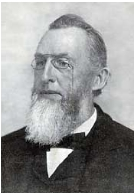
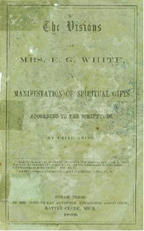
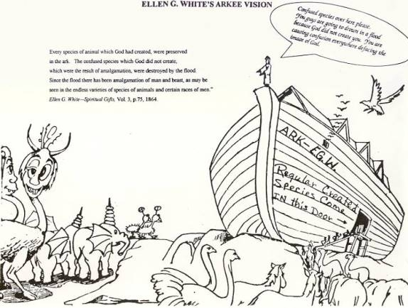

What did Ellen G. White mean by "Amalgamation of man and animals"?
Ellen G. White (EGW) wrote:
"In these letters which I write, in the testimonies I bear, I am presenting to you that which the Lord has presented to me. I do not write one article in the paper expressing merely my own ideas. They are what God has opened before me in vision--the precious rays of light shining from the throne." —Testimonies, Vol. 5 p. 67.
Ellen G. White is saying:
- She is presenting what the Lord told her.
- She does not write her own ideas.
- She receives her material from visions.
- The material is "precious rays of light from the throne."
After you read the documentation, see if Ellen G. White's statements are true or a myth. If you find they are a myth ask yourself, why do you support the cultic beliefs of Ellen G. White and the Seventh-day Adventist Church.
E. G. White has written two statements on amalgamation that has caused much embarrassment through the years in the Seventh-day Adventist Church because they are not Biblical or biologically true. Several Adventist apologists have written books and articles in a vain attempt to explain Ellen's nonsense.
"But if there was one sin above another which called for the destruction of the race by the flood, it was the base crime of amalgamation of man and beast which defaced the image of God, and caused confusion everywhere." —Spiritual Gifts, Vol. 3, p. 64, 1864.
"Every species of animal which God had created, were preserved in the ark. The confused species which God did not create, which were the result of amalgamation, were destroyed by the flood. Since the flood there has been amalgamation of man and beast, as may be seen in the endless varieties of species of animals and certain races of men." —Spiritual Gifts, Vol. 3, p.75, 1864.
Ellen G. White is saying in first quote:
- Amalgamation was the sin above all other sins that caused the flood and the destruction of the race.
- The amalgamation of man and beast defaced the image of God and caused confusion everywhere.
In the second quote Ellen is saying:
- Every species that God created were preserved in the ark.
- The confused species that were the result of amalgamation were not allowed on the ark and were destroyed by the flood.
- Since the flood there have been amalgamation of man and beast and may be seen today in species of animals and certain races of men. We are asked to believe that there are part human and part beast creatures about us today as there was before the flood.
Why was this "precious light from the throne" left out of E. G. White's later published books such as Patriarchs and Prophets? Her son, Willie C. White gives us the answer:
"Regarding the two paragraphs which are to be found in Spiritual Gifts and also in the Spirit of Prophecy regarding amalgamation and the reason they were left out of the later books, and the question as to who took the responsibility of leaving them out, I can speak with perfect clearness and assurance. They were left out by Ellen G. White. No one connected with her work had any authority over such a question, and I never heard of anyone offering to her counsel regarding this matter. In all questions of this kind, you may set it down as a certainty that Sister White was responsible for leaving out or adding to matters of this sort in the later editions of our books."—Selected Messages, Book 3, p. 452.
Does a prophet have a right to add and delete God's "precious rays of light from the throne"?

Uriah Smith Comes to Ellen's Defense in 1868
Ellen's first amalgamation statement was published in 1864; it created such questions as to whether the Negro race was human. Four years later in 1868 Uriah Smith wrote to defend Ellen's visions covering fifty-two objections in his book, The Visions of Mrs. E. G. White, A Manifestation of Spiritual gifts According to the Scripture.
Objection 39—The Negro Race Not Human

"The visions teach, says the objector, that the negro race is not human. We deny it. They do not so teach. Mark the language: " Since the flood there has been amalgamation of man and beast, as may be seen in the almost endless varieties of species of animals, and in certain races of men." This view was given for the purpose of illustrating the deep corruption and crime into which the race fell, even within a few years after the flood that signal manifestation of God's wrath against human wickedness. There was amalgamation; and the effect is still visible in certain races of men." Mark, those excepting the animals upon whom the effects of this work are visible, are called by the vision, "men." Now we have ever supposed that anybody that was called a man, was considered a human being. The vision speaks of all these classes as races of men; yet in the face of this plain declaration, they foolishly assert that the visions teach that some men are not human beings! But does any one deny the general statement contained in the extract given above? They do not. If they did, they could easily be silenced by a reference to such cases as the wild Bushmen of Africa, some tribes of the Hottentots, and perhaps the Digger Indians of our own country, &c. Moreover, naturalists affirm that the line of demarkation between the human and animal races is lost in confusion. It is impossible, as they affirm, to tell just where the human ends and the animal begins. Can we suppose that this was so ordained of God in the beginning? Rather has not sin marred the boundaries of these two kingdoms? But, says the objector, Paul says that " God hath made of one blood all nations of men for to dwell on all the face of the earth," and then they add, " Which shall we believe, Paul or E. G. White ?" You need not disbelieve E. G. White, in order to believe Paul; for there is no contradiction between them. Paul's language will apply to all classes of men who have any of the original Adamic blood in their veins; and that there are any who have not this, is not taught by the visions, nor claimed by any one. But for this text to weigh anything in favor of the objector, he must take the ground that God made every particle of blood that exists, in any human being. Is this so? Then God made all the scrofulous, leprous, or syphilitic blood that courses in the worst transgressor's veins! From any view which leads, to such a blasphemous conclusion, we prefer to be excused.
But what has the ancient sin of amalgamation to do with any race or people at the present time? Are they in any way responsible, or to be held accountable for it ? Not at all. Has any one a right to try to use it to their prejudice? By no means. The fact is mentioned simply to show how soon men relapsed into wickedness, and to what a degree. But we are to take all races and peoples as we find them. And those who manifest sufficient powers of mind to show that they are moral and accountable beings, are of course to be esteemed as objects of regard and philanthropic effort. We are bound to labor, so far as in our power, for the improvement of their mental, moral and physical condition. Whatever race of men we may take, Bushmen, Hottentots, Patagonians, or any class of people, however low they may apparently be in the scale of humanity, their mental capabilities are in every instance the basis on which we are to work, and by which we determine whether they are subjects of moral government or not. Then what about all this ado over the charge, which is itself false, that the visions teach that the negro is not a human being? What does it amount to? It is simply an effort to create prejudice in the minds of the people, unworthy any one who makes any pretensions to being a Christian, or even a gentleman." —Uriah Smith, THE VISIONS OF MRS. E. G. WHITE, A MANIFESTATION Of SPIRITUAL GIFTS ACCORDING TO THE SCRIPTURES, pp.102-105, 1868.
- There was offspring living in Ellen and Smith's day that was the result of amalgamation.
- Some of "the confused species" that Ellen failed to name Smith jumped right in and named them. He named the wild Bushmen of Africa, some tribes of Hottentots also from Africa, Digger Indians from America and Patagonians from South America.
- Smith believed as did the evolutionist that, "Moreover, naturalists affirm that the line of demarkation between human and animal races is lost in confusion." It is impossible as they affirm, to tell, just where the human ends and the animal begin. Can we suppose that this was so ordained of God in the beginning? Smith did not know that human blood and animal blood do not merge into one blood.
- That these black people should be treated as human because they had human blood in them from Adam.
- These people were of low mentality because of the sin of amalgamation and thy are not responsible for that sin. Keep in mind that Ellen approved of Smith's defense. If we use Smith's argument that the confused species that were the result of amalgamation were Negro or Black people, then we are faced with another problem. Moses married or amalgamated with an Ethiopian woman. (KJV). -"Miriam and Aaron began to talk against Moses because of his Cushite wife, for he had married a Cushite."-Num 12:1 (NIV). Would God have choose Moses to lead Israel if he had committed the greatest sin known to man and the one sin that called for the destruction of the race by the flood and his offspring were defacing the image of God?
James and Ellen Sells Uriah Smith's Book
James White read Smith's book and warmly recommended it in the August 25, 1868, Review and Herald: "The Association has just published a pamphlet entitled, "The Visions of Mrs. E. G. White, A Manifestation of Spiritual gifts According to the Scripture." It is written by the editor of the Review. While reading the manuscript, I felt very grateful to God that our people could have this able defense of those views they so much love and prize which others despise and oppose. This book is designed for very wide circulation. James White. —Spectrum, June 12, 1982, p.14. "James and Ellen White took 2,000 copies of Smith's book with them to campmeetings that year." —Spectrum, June 12, 1982, p.14.
If Uriah Smith was in error in explaining Ellen's vision why did Ellen not correct him? She had 47 years to correct him before she died in 1915.
"And God said, "Let the land produce living creatures according to their kinds: livestock, creatures that move along the ground, and wild animals, each according to its kind." And it was so."- Gen 1:24 (NIV) "All flesh is not the same: Men have one kind of flesh, animals have another, birds another and fish another." —1 Cor 15:39 (NIV)
The Bible says that animals would reproduce after their kind. Where is the evidence that a sexual union of man and beast (bestiality) could produce offspring? Science has never produced such evidence. The flesh of man and animals are different as well as their blood. Certainly if such creatures were alive as claimed by White and Smith this would be easily to prove and they could be vindicated. If this human/beast creature could be found then the evolutionists would claim their theory of evolution, as being correct for the missing link would be found.
Ellen G. White and U. Smith have sided with the evolutionist. Ellen could only see this man/beast creature in her supposed vision and Smith could only see it wearing Ellen's glasses and the evolutionist wish they see it in fossils. There should be many bones from the living and the dead creature/animals for them to verify if this were true.
Francis D. Nichol: In 1951, sixty-seven years after Ellen wrote her first amalgamation statement Nichol wrote a 703 page book defending Ellen G. White, titled Ellen G. White And Her Critics. Nichol claimed what Ellen meant was the amalgamation of man with man is what defaced the image of God. Not man with beast. The descendants of Cain mating with the descendants of Seth that caused the defacing of God's image. p.309. Nichol goes on to tell us that it was Satan that caused the change in the animals to sin. —Ellen G. White And Her Critics, p. 319.
How can the descendents of Cain and the descendents of Seth deface the image of God by marring and having offspring? Both groups were created in the image of God and both groups were sinners the same as people living today. How can animals mating outside of their species produce offspring? Some animals mate within their species and produce sterile offspring such as a horse and a donkey producing a sterile mule. How can this deface the image of God when animals are not created in God's image? Can animals sin and be guilty of the base crime of amalgamation? This is what the Adventists apologists would have us to believe from their animal to animal theory of amalgamation. In any case there is a lot of donkey mentality going on defending Ellen's false visions as attempting to change her words to get her to say what she did not believe. Uriah Smith certainly knew better what Ellen meant than later apologists.
George McCready Price wrote in the April 1931 issue of The Ministry, that he would like to make a slight alteration in Ellen G. White's statements. "Since the flood there has been an amalgamation of man and (of) beast, as may be seen in almost endless varieties of species of animal, and in certain races of men." —"The Problem of Hybridization" The Ministry April 1931, p. 13.
D. E. Robinson for many years Ellen G. White's personal secretary took issue with Price: In a paper titled "Amalgamation Versus Evolution" said that Price's insertion of the word "of" into Ellen White's statements did violence to the "obvious meaning " that the author herself intended." —Spectrum, June 12, 1982, p.14.
Dr. Harold Clark a biologist tells the truth
"Clark called attention to his work with Ellen White's son, W. C. White and D. E. Robinson, her secretary. Neither of these men ever doubted that Ellen White meant the crossing of man and beast by the phrase "amalgamation of man and beast." —Spectrum,June 12, 1982, p.11.
Letter from the Geoscience Research Institute
I am inclosing a letter from Clyde Webster Jr. Ph. D., senior research scientist at Loma Linda, to Rex DeGoyler now deceased dated April 15, 1991. You will see from Mr. Webster's letter that he believes in amalgamation as taught by Mrs. White and ignores science and the Bible to prop up his prophet.
I am sorry that you were not at the afternoon meetings where this topic was discussed in some detail.
Concerning the amalgamation of man with beast I believe this was how the Image of God was confused, and as Sr. White points out, was the ultimate cause of the flood. It would have been impossible to ascertain whether this living form was man or beast thereby confusing the Image of God in which man was originally created.
I personally believe that the evidence seen today for such amalgamation is what science calls the "ape-man". such species as the austrailio Pithicus, a. Africanus, a. Robustus, and others would fit into this category. Neanderthal man on the other hand would not be classified as an ape-man, but rather a degenerate homo Sapiens sapiens.
Not being sure of what you were seeking for as an answer, I trust that these few comments have met your needs.
Sections
Robert K. Sanders, Founder and Editor of Truth or Fables, 1997–2012
Life Assurance Ministries assumed ownership of Truth or Fables in 2012
© 2016 Life Assurance Ministries. All rights reserved.
